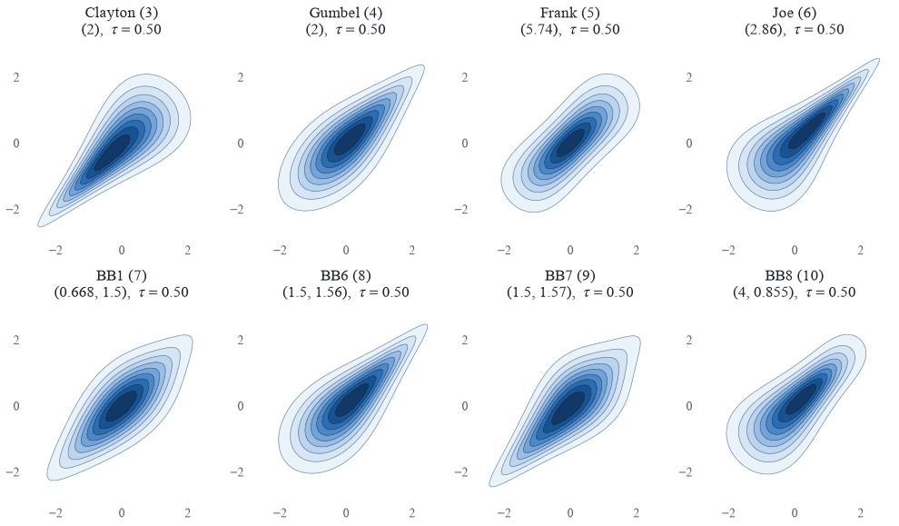
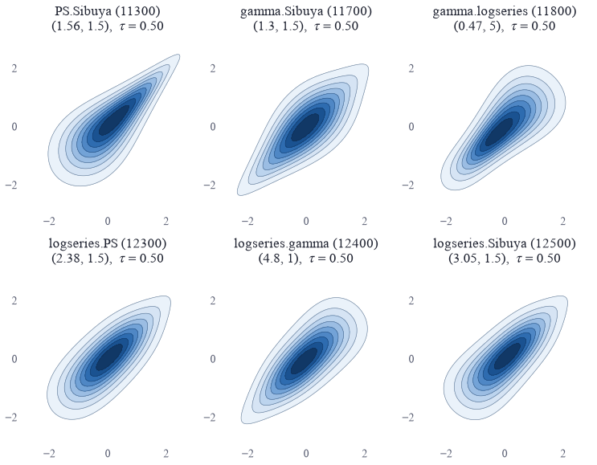

Archimedean families¶
An Archimedean copula is built from a single univariate function. Take a generator \(\psi : [0, \infty) \to (0, 1]\) that starts at \(\psi(0) = 1\), decreases to \(0\) and is convex, and let \(\varphi = \psi^{-1}\) be its inverse. Then
Every generator fortvine uses is the Laplace transform of a positive random variable \(M\), \(\psi(s) = \mathrm{E}\, e^{-sM}\). This gives the family a mixing ("frailty") reading: draw a common factor \(M\), then draw \(U\) and \(V\) independently given \(M\) with \(P(U \le u \mid M) = \exp(-M \varphi(u))\). The heavier the variation of \(M\), the stronger the dependence (Marshall & Olkin 1988).

Hand-coded Archimedean families at Kendall's \(\tau = 0.5\), density contours in normal scores (parameters in brackets, in fortvine's order).
The general formulas¶
With \(s = \varphi(u) + \varphi(v)\), every quantity fortvine needs follows from \(\psi\) and its first two derivatives:
All Archimedean copulas are exchangeable. In two dimensions a convex, decreasing \(\psi\) is enough for \(C\) to be a copula; complete monotonicity (the Laplace-transform property) is what lets the same generator work in any dimension, and it is what makes the compositions below valid. fortvine evaluates \(\log\psi\), \(\log(-\psi')\) and \(\log\psi''\) directly, so \(C\) itself never has to be formed and nothing cancels.
Kendall's tau has a one-dimensional representation (Genest & MacKay 1986; Joe 2014, §3.3):
Tail dependence depends only on the behaviour of \(\psi\) at the two ends of its domain:
So a generator with a power-law right tail, \(\psi(s) \sim c\, s^{-1/k}\), gives \(\lambda_L = 2^{-1/k}\), and one with \(1 - \psi(s) \sim c\, s^{1/m}\) near zero (\(m > 1\)) gives \(\lambda_U = 2 - 2^{1/m}\). A generator that decays exponentially has \(\lambda_L = 0\); one with a finite slope \(\psi'(0)\) has \(\lambda_U = 0\).
Rotations. The Archimedean families with a positive parameter range model positive dependence only. The 90° and 270° rotations give negative dependence and the 180° rotation (the survival copula) swaps the two tails; see rotations. Frank and Ali–Mikhail–Haq cover negative dependence through their parameter and are not rotated.
The seven Laplace transforms¶
The generic engine (codes 10000+, see the index) builds every
Archimedean and Archimax family from seven Laplace-transform families. Each one, used alone,
is the generator of a classical copula:
og |
Laplace transform | \(\psi(s)\) | \(\varphi(u) = \psi^{-1}(u)\) | Copula | Hand code |
|---|---|---|---|---|---|
| 1 | positive stable | \(e^{-s^{1/\theta}}\), \(\theta \ge 1\) | \((-\log u)^\theta\) | Gumbel | 4 |
| 2 | gamma | \((1+s)^{-1/\theta}\), \(\theta > 0\) | \(u^{-\theta} - 1\) | Clayton | 3 |
| 3 | Sibuya | \(1 - (1 - e^{-s})^{1/\theta}\), \(\theta \ge 1\) | \(-\log\big(1 - (1-u)^\theta\big)\) | Joe | 6 |
| 4 | logarithmic series | \(-\frac{1}{\theta}\log\big(1 - (1 - e^{-\theta}) e^{-s}\big)\), \(\theta > 0\) | \(-\log\frac{1 - e^{-\theta u}}{1 - e^{-\theta}}\) | Frank (\(\theta > 0\)) | 5 |
| 5 | exponentially tilted positive stable | \(\exp\big(\delta^{-1} - (\delta^{-\theta} + s)^{1/\theta}\big)\) | \((\delta^{-1} - \log u)^\theta - \delta^{-\theta}\) | BB9 | 20 |
| 6 | generalised Sibuya | \(\delta^{-1}\big[1 - (1 - \eta e^{-s})^{1/\theta}\big]\), \(\eta = 1 - (1-\delta)^\theta\) | \(-\log\frac{1 - (1 - \delta u)^\theta}{\eta}\) | BB8 | 10 |
| 7 | shifted negative binomial | \(\left(\frac{1 - \pi}{e^s - \pi}\right)^{1/\theta}\) | \(\log\big((1-\pi) u^{-\theta} + \pi\big)\) | BB10 | 21 |
The generic codes of these seven Archimedean copulas, 10100 to 10700, are valid and are
used for cross-checks against the hand-coded versions, but fv_generic_families() leaves them
out because they duplicate codes 3–6, 10, 20 and 21.
For implementers, the derivatives fortvine evaluates (in log form) are:
| LT | \(-\psi'(s)\) | \(\psi''(s)\) |
|---|---|---|
| positive stable (\(q = s^{1/\theta}\)) | \(\frac{q}{\theta s} e^{-q}\) | \(\frac{q}{\theta s^2} e^{-q} \left(\frac{q}{\theta} + 1 - \frac{1}{\theta}\right)\) |
| gamma | \(\frac{1}{\theta} (1+s)^{-1/\theta - 1}\) | \(\frac{1}{\theta}\left(\frac{1}{\theta} + 1\right)(1+s)^{-1/\theta - 2}\) |
| Sibuya (\(w = 1 - e^{-s}\)) | \(\frac{1}{\theta} w^{1/\theta - 1} e^{-s}\) | \(\frac{1}{\theta} w^{1/\theta - 2} e^{-s} \left(1 - \frac{e^{-s}}{\theta}\right)\) |
| log series (\(z = (1 - e^{-\theta}) e^{-s}\)) | \(\frac{z}{\theta (1 - z)}\) | \(\frac{z}{\theta (1 - z)^2}\) |
| tilted PS (\(r = \delta^{-\theta} + s\), \(q = r^{1/\theta}\)) | \(\psi(s) \frac{q}{\theta r}\) | \(\psi(s) \frac{q}{\theta r^2}\left(\frac{q}{\theta} + 1 - \frac{1}{\theta}\right)\) |
| gen. Sibuya (\(z = \eta e^{-s}\)) | \(\frac{z (1-z)^{1/\theta - 1}}{\delta\theta}\) | \(\frac{z (1-z)^{1/\theta - 2}}{\delta\theta}\left(1 - \frac{z}{\theta}\right)\) |
| neg. binomial (\(e = e^{-s}\)) | \(\frac{\psi(s)}{\theta (1 - \pi e)}\) | \(\frac{\psi(s)}{(1 - \pi e)^2} \left(\frac{1}{\theta^2} + \frac{\pi e}{\theta}\right)\) |
One-parameter families¶
Clayton¶
| Property | Value |
|---|---|
| Code | 3 (FV_CLAYTON); generic duplicate 10200 |
| Generator | gamma LT, \(\psi(s) = (1 + s)^{-1/\theta}\) |
| Parameter, box | \(\theta \in [10^{-10}, 28]\) |
| Kendall's \(\tau\) | \(\theta / (\theta + 2)\), so \(\tau \in (0, 0.933]\) in the box |
| \(\lambda_L\), \(\lambda_U\) | \(2^{-1/\theta}\), \(0\) |
| Exchangeable | yes |
| Rotations | 90, 180, 270 |
Clayton (1978) is the canonical lower-tail family. The negative-parameter branch \(\theta \in [-1, 0)\) of the literature is left out: there the density vanishes on a region of positive area, which breaks likelihood fitting (see other families); negative dependence comes from the 90° and 270° rotations instead.
Gumbel¶
| Property | Value |
|---|---|
| Code | 4 (FV_GUMBEL); generic duplicate 10100 (and 10001 as an EV copula) |
| Generator | positive stable LT, \(\psi(s) = \exp(-s^{1/\theta})\) |
| Parameter, box | \(\theta \in [1, 50]\) |
| Kendall's \(\tau\) | \(1 - 1/\theta\), \(\tau \in [0, 0.98]\) |
| \(\lambda_L\), \(\lambda_U\) | \(0\), \(2 - 2^{1/\theta}\) |
| Exchangeable | yes |
| Rotations | 90, 180, 270 |
With \(x = -\log u\), \(y = -\log v\) and \(m = (x^\theta + y^\theta)^{1/\theta}\):
Gumbel (1960) is the only copula that is both Archimedean and extreme-value; its Pickands function is the logistic model of the extreme-value page. The h-inverse has no closed form; fortvine solves the equivalent scalar equation \(d + (\theta - 1)\log(1 + d/x) = -\log p\) for \(d = m - x\) by a Newton iteration that is monotone from its starting point, so it never needs bracketing.
Frank¶
| Property | Value |
|---|---|
| Code | 5 (FV_FRANK); generic duplicate 10400 (positive branch only) |
| Generator | logarithmic-series LT (for \(\theta > 0\)) |
| Parameter, box | \(\theta \in [-35, 35]\), \(\theta = 0\) is independence |
| Kendall's \(\tau\) | \(1 - \frac{4}{\theta} + \frac{4}{\theta^2}\int_0^\theta \frac{t}{e^t - 1}\,dt\), \(\tau \in [-0.891, 0.891]\) |
| \(\lambda_L\), \(\lambda_U\) | \(0\), \(0\) |
| Exchangeable | yes, and radially symmetric |
| Rotations | none (\(\theta < 0\) gives negative dependence) |
Frank (1979) is the standard "no tail dependence, symmetric" family. The integral in \(\tau\) is the first Debye function; fortvine evaluates it numerically and inverts \(\tau\) by Newton's method with the analytic derivative. For \(\theta < 0\) the generator is no longer a Laplace transform, but it stays convex, so the formula is a valid two-dimensional copula.
Joe¶
| Property | Value |
|---|---|
| Code | 6 (FV_JOE); generic duplicate 10300 |
| Generator | Sibuya LT, \(\psi(s) = 1 - (1 - e^{-s})^{1/\theta}\) |
| Parameter, box | \(\theta \in [1, 30]\) |
| Kendall's \(\tau\) | \(1 + \frac{2}{2 - \theta}\big[\Psi(2) - \Psi(2/\theta + 1)\big]\) (\(\Psi\) = digamma function), \(\tau \in [0, 0.936]\) |
| \(\lambda_L\), \(\lambda_U\) | \(0\), \(2 - 2^{1/\theta}\) |
| Exchangeable | yes |
| Rotations | 90, 180, 270 |
With \(\bar u = 1 - u\), \(\bar v = 1 - v\) and \(S = \bar u^\theta + \bar v^\theta - \bar u^\theta \bar v^\theta\):
Joe (1993) has a stronger upper tail than Gumbel at the same \(\tau\). The \(\tau\) formula has a removable singularity at \(\theta = 2\) (where \(\tau = 2 - \pi^2/6\)); fortvine expands it there. As for Gumbel, the h-inverse is found by a monotone scalar Newton iteration.
Ali–Mikhail–Haq (AMH)¶
| Property | Value |
|---|---|
| Code | 14 (FV_AMH) |
| Generator | \(\psi(s) = (1 - \theta)/(e^s - \theta)\): for \(\theta \in [0, 1)\) the LT of a geometric distribution |
| Parameter, box | \(\theta \in [-1, 0.9999]\) |
| Kendall's \(\tau\) | \(1 - \frac{2\left[\theta + (1 - \theta)^2 \log(1 - \theta)\right]}{3\theta^2}\), \(\tau \in [-0.182, 1/3)\) |
| \(\lambda_L\), \(\lambda_U\) | \(0\), \(0\) (inside the box) |
| Exchangeable | yes |
| Rotations | none (\(\theta < 0\) gives negative dependence) |
Ali, Mikhail & Haq (1978). AMH is a weak-dependence family: even at \(\theta \to 1\) Kendall's \(\tau\) only reaches \(1/3\). The geometric LT is the negative-binomial LT of BB10 with exponent one, so AMH is the \(\theta = 1\) slice of BB10, with AMH's parameter in the role of \(\pi\). Its lower tail coefficient jumps to \(1/2\) exactly at the excluded end point \(\theta = 1\).
Two-parameter Laplace transforms¶
BB9¶
| Property | Value |
|---|---|
| Code | 20 (FV_BB9); generic duplicate 10500 |
| Generator | exponentially tilted positive stable LT |
| Parameters, box | \(\theta \in [1, 10]\), \(\delta \in [0.01, 30]\) |
| Kendall's \(\tau\) | no closed form; \(\tau \in [0, 0.893]\) in the box |
| \(\lambda_L\), \(\lambda_U\) | \(0\), \(0\) |
| Exchangeable | yes |
| Rotations | 90, 180, 270 |
BB9 is Crowder's (1989) copula. Tilting gives the generator a finite slope at zero, so the upper tail dependence of Gumbel disappears for every finite \(\delta\); as \(\delta \to \infty\) the family tends to Gumbel(\(\theta\)). The power-variance-function (PVF) frailty copula and the inverse-Gaussian frailty copula of other software are reparametrisations of BB9.
BB8¶
| Property | Value |
|---|---|
| Code | 10 (FV_BB8); generic duplicate 10600 |
| Generator | generalised Sibuya LT |
| Parameters, box | \(\theta \in [1, 8]\), \(\delta \in [10^{-4}, 1]\) |
| Kendall's \(\tau\) | no closed form; \(\tau \in [0, 0.783]\) in the box |
| \(\lambda_L\), \(\lambda_U\) | \(0\), \(0\) for \(\delta < 1\); \(\lambda_U = 2 - 2^{1/\theta}\) at \(\delta = 1\) |
| Exchangeable | yes |
| Rotations | 90, 180, 270 |
With \(\eta = 1 - (1 - \delta)^\theta\):
At \(\delta = 1\) BB8 is the Joe copula; \(\theta = 1\) gives independence. The parameter \(\delta\) therefore dials between a tail-dependent and a tail-free shape at fixed \(\theta\).
BB10¶
| Property | Value |
|---|---|
| Code | 21 (FV_BB10); generic duplicate 10700 |
| Generator | shifted negative binomial LT |
| Parameters, box | \(\theta \in [0.01, 30]\), \(\pi \in [0, 1]\) |
| Kendall's \(\tau\) | no closed form; \(\tau \in [0, 0.943]\) in the box |
| \(\lambda_L\), \(\lambda_U\) | \(0\), \(0\) |
| Exchangeable | yes |
| Rotations | 90, 180, 270 |
with \(\bar u_\theta = 1 - u^\theta\), \(\bar v_\theta = 1 - v^\theta\) and \(D = 1 - \pi \bar u_\theta \bar v_\theta\). \(\pi = 0\) is independence and \(\theta = 1\) is AMH(\(\pi\)). Like AMH it is a moderate-dependence family without tail dependence.
Compositions: \(\psi\) stopped \(\zeta\)¶
New Laplace transforms can be made by composing two old ones. If \(\zeta\) is a Laplace transform such that \(g = -\log\zeta\) is increasing and concave with \(g(0) = 0\) (it is a Bernstein function when \(\zeta\) belongs to an infinitely divisible distribution), then
is again a generator. Joe (2014, Appendix A.1.2) calls this "\(\psi\) stopped \(\zeta\)"; in the frailty picture the outer frailty is replaced by a compound one. Its derivatives
are sums of non-negative terms (since \(\psi_o' < 0\) and \(g'' \le 0\)), which is how fortvine keeps them in log space. The inverse is \(\varphi(u) = g^{-1}\big(\varphi_o(u)\big)\).
The generic engine uses the four one-parameter transforms both as outer generator \(\psi_o(\,\cdot\,;\theta)\) and as inner Bernstein function \(g(\,\cdot\,;\delta)\). The parameter order is always (outer \(\theta\), inner \(\delta\)). The inner functions are:
| inner | \(g(s; \delta)\) | \(g^{-1}(x; \delta)\) | box of \(\delta\) in a composition |
|---|---|---|---|
| positive stable | \(s^{1/\delta}\) | \(x^\delta\) | \([1, 10]\) |
| gamma | \(\delta^{-1}\log(1 + s)\) | \(e^{\delta x} - 1\) | \([10^{-3}, 15]\) |
| Sibuya | \(-\log\big(1 - (1 - e^{-s})^{1/\delta}\big)\) | \(-\log\big(1 - (1 - e^{-x})^\delta\big)\) | \([1, 10]\) |
| log series | \(-\log\left[-\delta^{-1}\log\big(1 - (1 - e^{-\delta})e^{-s}\big)\right]\) | \(\log(1 - e^{-\delta}) - \log\big(1 - e^{-\delta e^{-x}}\big)\) | \([10^{-3}, 30]\) |
The outer parameter boxes in a composition are the same as the inner ones: \([1, 10]\) for positive stable and Sibuya, \([10^{-3}, 15]\) for gamma, \([10^{-3}, 30]\) for log series.
The sixteen combinations¶
The outer-generator code of a composition is og = 10 + 4 (po - 1) + pin, where po and pin
number the outer and inner transform as 1 positive stable, 2 gamma, 3 Sibuya, 4 log series. The
Archimedean code is then 10000 + 100 og.
| outer \(\downarrow\) / inner \(\rightarrow\) | positive stable | gamma | Sibuya | log series |
|---|---|---|---|---|
| positive stable | og 11: excluded, equals Gumbel(\(\theta\delta\)) |
og 12: BB3 (hand code 18) |
og 13: new, 11300 |
og 14: excluded (numerics) |
| gamma | og 15: BB1 (hand code 7) |
og 16: BB2 (hand code 17) |
og 17: new, 11700 |
og 18: new, 11800 |
| Sibuya | og 19: BB6 (hand code 8) |
og 20: BB7 (hand code 9) |
og 21: excluded, equals Joe(\(\theta\delta\)) |
og 22: excluded (numerics) |
| log series | og 23: new, 12300 |
og 24: new, 12400 |
og 25: new, 12500 |
og 26: excluded (numerics) |
Why some cells are missing:
- Closed under composition. Positive stable after positive stable is positive stable with exponent \(\theta\delta\), and Sibuya after Sibuya is Sibuya with \(\theta\delta\): \(1 - \big(1 - e^{-g}\big)^{1/\theta}\) with \(e^{-g} = 1 - (1 - e^{-s})^{1/\delta}\) collapses to \(1 - (1 - e^{-s})^{1/(\theta\delta)}\). Both parameters would not be identifiable.
- Numerically unreliable. A log-series inner under a positive-stable, Sibuya or log-series
outer does not reach the accuracy fortvine requires in double precision, so those three codes
are rejected (
gen_validreturns false; compare the remarks in Joe 2014, Appendix A.1.2). Under a gamma outer the same inner is accurate, which is why11800is offered. - Already hand-coded. The five BB cells are valid generic codes (
11200,11500,11600,11900,12000), useful for cross-checking, butfv_generic_families()omits them as duplicates.

The six new compositions at \(\tau = 0.5\) (outer \(\theta\) tuned, inner \(\delta\) fixed).
Tail behaviour of a composition¶
The two ends of \(\psi_o \circ g\) combine the two ends of the parts. Near \(s = 0\), positive stable and Sibuya behave like a power, \(1 - \psi(s) \approx s^{1/\theta}\), while gamma and log series are linear; near \(s = \infty\) only the gamma transform has a power-law tail, and a gamma inner turns \(s\) into \(\log s\), so the outer tail is read on a logarithmic scale. The resulting coefficients are listed in each family below; they agree with numerical limits of \(C(t,t)/t\) computed with fortvine.
BB1¶
| Property | Value |
|---|---|
| Code | 7 (FV_BB1); generic 11500 (gamma outer, positive-stable inner) |
| Parameters, box | \(\theta \in [0, 7]\), \(\delta \in [1, 7]\) |
| Kendall's \(\tau\) | \(1 - \dfrac{2}{\delta(\theta + 2)}\) |
| \(\lambda_L\), \(\lambda_U\) | \(2^{-1/(\theta\delta)}\), \(2 - 2^{1/\delta}\) |
| Exchangeable | yes |
| Rotations | 90, 180, 270 |
BB1 (Joe & Hu 1996) has dependence in both tails with two separate controls; \(\delta = 1\) is Clayton(\(\theta\)) and \(\theta \to 0\) gives Gumbel(\(\delta\)). It is also the Archimax copula of a gamma generator with the logistic Pickands function (see Archimax).
BB2¶
| Property | Value |
|---|---|
| Code | 17 (FV_BB2); generic 11600 (gamma outer, gamma inner) |
| Parameters, box | \(\theta \in [0.01, 30]\), \(\delta \in [0.01, 30]\) |
| Kendall's \(\tau\) | no closed form; \(\tau \in [0, 0.997]\) in the box |
| \(\lambda_L\), \(\lambda_U\) | \(1\), \(0\) |
| Exchangeable | yes |
| Rotations | 90, 180, 270 |
The generator decays only like a power of \(\log s\), which makes the lower tail coefficient equal to one for every parameter value: the lower tail is as heavy as possible without being singular. Nelsen's (2006) families 4.2.19 and 4.2.20 are the slices \(\theta = 1\) and \(\delta = 1\) of BB2.
BB3¶
| Property | Value |
|---|---|
| Code | 18 (FV_BB3); generic 11200 (positive-stable outer, gamma inner) |
| Parameters, box | \(\theta \in [1, 10]\), \(\delta \in [0.01, 30]\) |
| Kendall's \(\tau\) | no closed form; \(\tau \in [0, 0.956]\) in the box |
| \(\lambda_L\), \(\lambda_U\) | \(1\) if \(\theta > 1\), \(2^{-1/\delta}\) if \(\theta = 1\); \(2 - 2^{1/\theta}\) |
| Exchangeable | yes |
| Rotations | 90, 180, 270 |
with \(x = -\log u\), \(y = -\log v\). At \(\theta = 1\) BB3 is Clayton(\(\delta\)).
BB6¶
| Property | Value |
|---|---|
| Code | 8 (FV_BB6); generic 11900 (Sibuya outer, positive-stable inner) |
| Parameters, box | \(\theta \in [1, 6]\), \(\delta \in [1, 8]\) |
| Kendall's \(\tau\) | no closed form; \(\tau \in [0, 0.965]\) in the box |
| \(\lambda_L\), \(\lambda_U\) | \(0\), \(2 - 2^{1/(\theta\delta)}\) |
| Exchangeable | yes |
| Rotations | 90, 180, 270 |
\(\theta = 1\) is Gumbel(\(\delta\)) and \(\delta = 1\) is Joe(\(\theta\)). BB6 is the Archimax copula of the Sibuya generator and the logistic Pickands function.
BB7¶
| Property | Value |
|---|---|
| Code | 9 (FV_BB7); generic 12000 (Sibuya outer, gamma inner) |
| Parameters, box | \(\theta \in [1, 6]\), \(\delta \in [0.01, 25]\) |
| Kendall's \(\tau\) | no closed form; \(\tau \in [0, 0.863]\) in the box |
| \(\lambda_L\), \(\lambda_U\) | \(2^{-1/\delta}\), \(2 - 2^{1/\theta}\) |
| Exchangeable | yes |
| Rotations | 90, 180, 270 |
BB7 ("Joe–Clayton") separates the two tails cleanly: \(\delta\) sets the lower tail and \(\theta\) the upper. \(\theta = 1\) is Clayton(\(\delta\)); \(\delta \to 0\) gives Joe(\(\theta\)).
PS.Sibuya (11300)¶
| Property | Value |
|---|---|
| Code | 11300 (generic only) |
| Parameters, box | \(\theta \in [1, 10]\) (positive stable), \(\delta \in [1, 10]\) (Sibuya) |
| Kendall's \(\tau\) | no closed form; \(\tau \in [0, 0.961]\) in the box |
| \(\lambda_L\), \(\lambda_U\) | \(0\), \(2 - 2^{1/(\theta\delta)}\) |
| Exchangeable | yes |
An upper-tail family that interpolates between Gumbel (\(\delta = 1\)) and Joe (\(\theta = 1\)), the mirror image of BB6 (which puts Sibuya outside and positive stable inside).
gamma.Sibuya (11700)¶
| Property | Value |
|---|---|
| Code | 11700 (generic only) |
| Parameters, box | \(\theta \in [10^{-3}, 15]\) (gamma), \(\delta \in [1, 10]\) (Sibuya) |
| Kendall's \(\tau\) | no closed form; \(\tau \in [0, 0.897]\) in the box |
| \(\lambda_L\), \(\lambda_U\) | \(2^{-1/\theta}\), \(2 - 2^{1/\delta}\) |
| Exchangeable | yes |
A both-tails family like BB1 and BB7, with the lower tail set by \(\theta\) alone and the upper tail by \(\delta\) alone. \(\delta = 1\) is Clayton(\(\theta\)) and \(\theta \to 0\) tends to Joe(\(\delta\)).
gamma.logseries (11800)¶
| Property | Value |
|---|---|
| Code | 11800 (generic only) |
| Parameters, box | \(\theta \in [10^{-3}, 15]\) (gamma), \(\delta \in [10^{-3}, 30]\) (log series) |
| Kendall's \(\tau\) | no closed form; \(\tau \in [0, 0.901]\) in the box |
| \(\lambda_L\), \(\lambda_U\) | \(2^{-1/\theta}\), \(0\) |
| Exchangeable | yes |
A lower-tail family with a Frank-like body: \(\delta \to 0\) gives Clayton(\(\theta\)) and \(\theta \to 0\) gives Frank(\(\delta\)).
logseries.PS (12300)¶
| Property | Value |
|---|---|
| Code | 12300 (generic only) |
| Parameters, box | \(\theta \in [10^{-3}, 30]\) (log series), \(\delta \in [1, 10]\) (positive stable) |
| Kendall's \(\tau\) | no closed form; \(\tau \in [0, 0.987]\) in the box |
| \(\lambda_L\), \(\lambda_U\) | \(0\), \(2 - 2^{1/\delta}\) |
| Exchangeable | yes |
\(\delta = 1\) is Frank(\(\theta\)); \(\theta \to 0\) gives Gumbel(\(\delta\)). It is also the Archimax copula of the log-series generator with the logistic Pickands function.
logseries.gamma (12400)¶
| Property | Value |
|---|---|
| Code | 12400 (generic only) |
| Parameters, box | \(\theta \in [10^{-3}, 30]\) (log series), \(\delta \in [10^{-3}, 15]\) (gamma) |
| Kendall's \(\tau\) | no closed form; \(\tau \in [0, 0.882]\) in the box |
| \(\lambda_L\), \(\lambda_U\) | \(2^{-1/\delta}\), \(0\) |
| Exchangeable | yes |
The lower-tail counterpart of 11800 with the roles of the two transforms swapped: \(\theta \to 0\) gives Clayton(\(\delta\)) and \(\delta \to 0\) gives Frank(\(\theta\)).
logseries.Sibuya (12500)¶
| Property | Value |
|---|---|
| Code | 12500 (generic only) |
| Parameters, box | \(\theta \in [10^{-3}, 30]\) (log series), \(\delta \in [1, 10]\) (Sibuya) |
| Kendall's \(\tau\) | no closed form; \(\tau \in [0, 0.987]\) in the box |
| \(\lambda_L\), \(\lambda_U\) | \(0\), \(2 - 2^{1/\delta}\) |
| Exchangeable | yes |
\(\delta = 1\) is Frank(\(\theta\)); \(\theta \to 0\) gives Joe(\(\delta\)).
References¶
- Ali, M. M., Mikhail, N. N. and Haq, M. S. (1978). A class of bivariate distributions including the bivariate logistic. Journal of Multivariate Analysis 8, 405–412.
- Clayton, D. G. (1978). A model for association in bivariate life tables. Biometrika 65, 141–151.
- Crowder, M. (1989). A multivariate distribution with Weibull connections. Journal of the Royal Statistical Society B 51, 93–107.
- Frank, M. J. (1979). On the simultaneous associativity of F(x, y) and x + y − F(x, y). Aequationes Mathematicae 19, 194–226.
- Genest, C. and MacKay, J. (1986). The joy of copulas: bivariate distributions with uniform marginals. The American Statistician 40, 280–283.
- Gumbel, E. J. (1960). Distributions des valeurs extrêmes en plusieurs dimensions. Publ. Inst. Statist. Univ. Paris 9, 171–173.
- Joe, H. (1993). Parametric families of multivariate distributions with given margins. Journal of Multivariate Analysis 46, 262–282.
- Joe, H. (2014). Dependence Modeling with Copulas. Chapman & Hall/CRC.
- Joe, H. and Hu, T. (1996). Multivariate distributions from mixtures of max-infinitely divisible distributions. Journal of Multivariate Analysis 57, 240–265.
- Marshall, A. W. and Olkin, I. (1988). Families of multivariate distributions. Journal of the American Statistical Association 83, 834–841.
- Nelsen, R. B. (2006). An Introduction to Copulas, 2nd ed. Springer.